APM Fluffy Monsters - Episódio 1
Olhos, piscar os olhos, Dynamic Effects no Graph Editor e Lattices
APM Fluffy Monsters - Episódio 1
Olhos
Os olhos das personagens foram criados utilizando métodos diferentes: com textura de imagem e com materiais procedimentais.
Os olhos verdes foram criados com uma textura de imagem. É basicamente uma esfera com uma ligeira saliência num dos lados (criada com Proportional Edit).
Foi feito um Unwrap depois de criado um Seam (veja o círculo vermelho na imagem abaixo) para mapear corretamente a textura à esfera.
Como os olhos têm brilho e reflexo, o material final mistura Diffuse com Glossy. O Mix Shader controla a quantidade de Diffuse e de Glossy.
 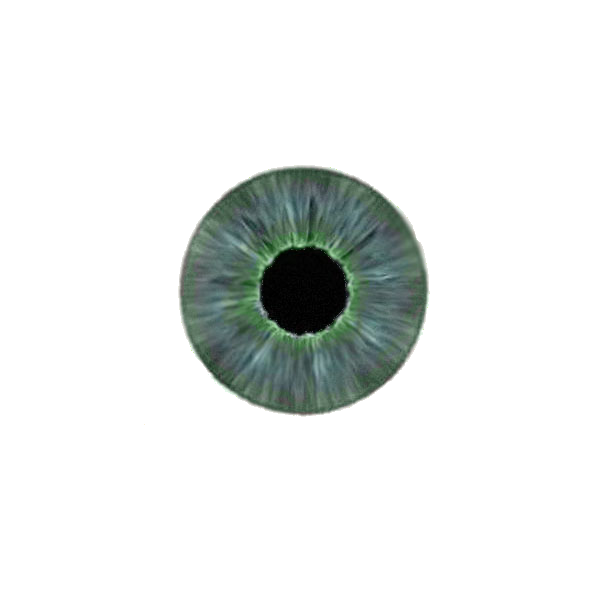
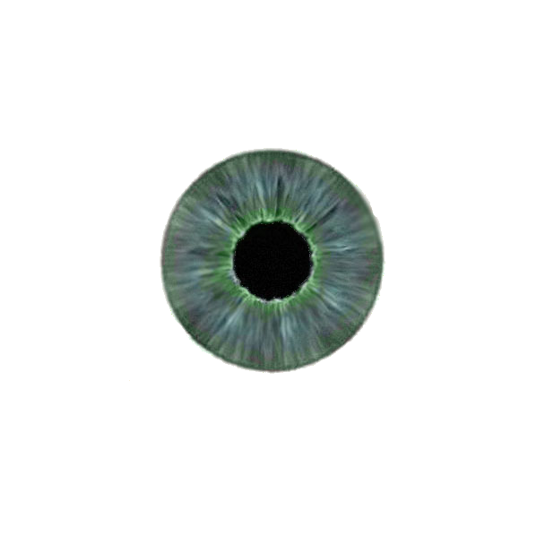
Para facilitar a criação de texturas de olhos similares mas com cores diferentes, descarregue o template do olho para GIMP.
Os olhos azuis foram criados sem qualquer imagem, apenas com materiais. A esfera (similar à do olho verde) tem três materiais: sclera, iris e pupil. Estes materiais correspondem à Esclera (branco do olho), íris e pupila. Em todos os materiais foram utilizados shaders Glossy para criar o brilho/reflexo.
O material da esclera inclui uma textura Wave para misturar branco e vermelho, permitindo criar olhos raiados de sangue.
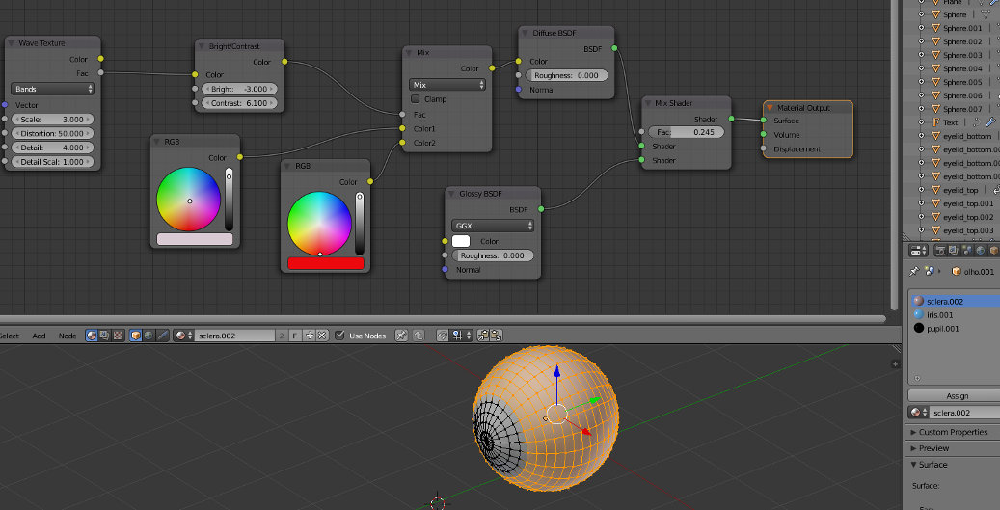 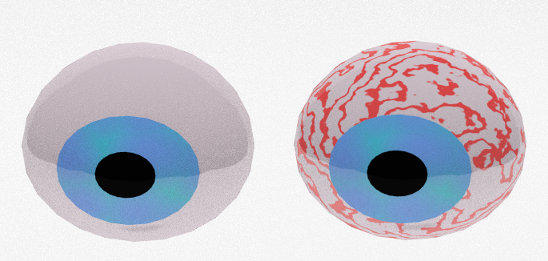O material da íris é criado misturando dois tons de azul.
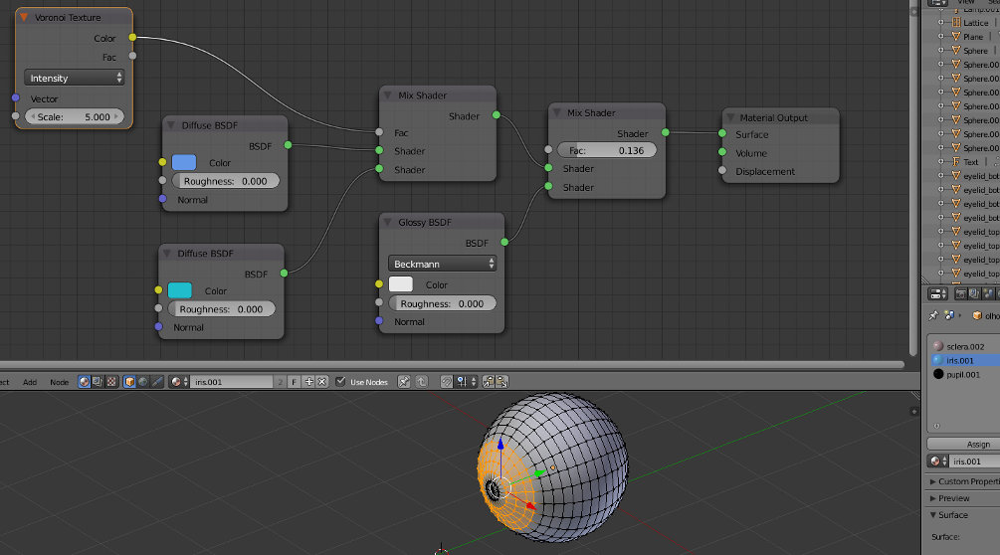O material da pupila é simplesmente preto.
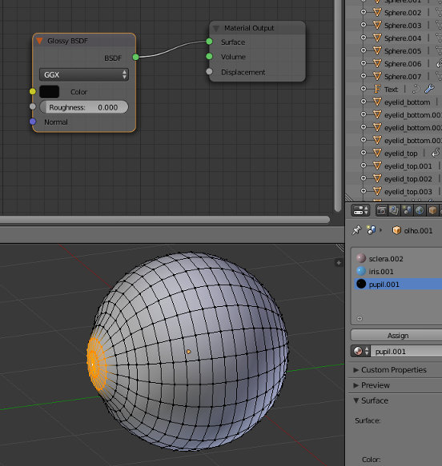Consulte o texto UV Mapping de uma lata e Materiais no Cycles para obter mais informação sobre UV e materiais.
Para outra técnica de criação de olhos, consulte...
- Modeling an Eye@blenderbasics.com
- Modeling an Eye@blenderbasics.com
Piscar os olhos
Quando piscar os olhos?
De acordo com a ciência, o ser humano normal pisca os olhos 15-20 vezes por minuto (a cada 3-4 segundos). Isso não significa que a sua personagem deve piscar estas vezes todas!!! Utilize o piscar de olhos quando a personagem mover a cabeça, quando estiver a pensar em algo e quando estiver a olhar fixamente durante algum tempo.
Algumas notas interessantes sobre animar o piscar de olhos aqui.
E como piscar?
Piscadela normal
2-1-3 = 2 frames para fechar, 1 frame fechado e 3 para abrir. Leva mais tempo a abrir do que a fechar.
Pode ver aqui uma imagem que representa estes tempos. A pose 1 e 7 são iguais.
Piscadela rápida
2-3 = 2 frames para fechar e 3 para abrir.
Muito rápida
1-2: frame para fechar e 2 para abrir. Não fecha totalmente. Conhece a expressão "fazer olhinhos"? Imagine várias piscadelas muito rápidas...
Piscadela longa
3-3-4: 3 frames para fechar, 3 frame fechado e 4 para abrir
Como animar o piscar de olhos?
Existem várias possibilidades com graus de dificuldade e sofisticação diferentes. Obviamente, o piscar de olhos também depende da geometria existente. Cada um dos olhos dos nossos monstros é composto por 4 objetos: base, olho, pálpebra superior e pálpebra inferior. O piscar de olhos é criado pela rotação das pálpebras superior e inferior.
A base do olho é uma meia esfera com Extrudes para criar um braço que liga ao corpo do monstro. Foi utilizado o modifier Solidify para dar alguma espessura. Esta base está aparentada ao corpo.
As pálpebras são meias esferas que estão aparentadas à base e que que rodam sobre si mesmas. Para facilitar a rotação, a Origin das pálpebras está alinhada com a Origin do olho. Na realidade, as pálpebras foram criadas a partir de um duplicado do olho com um Scale muito suave que foi depois dividido em duas partes.
Os olhos estão aparentados à base.
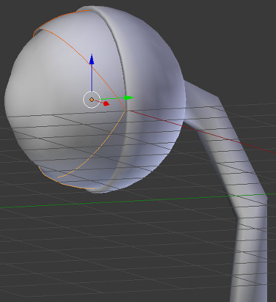 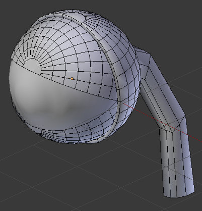Dynamic Effects no Graph Editor
Em primeiro lugar, foi criada a animação do peso com 2 keyframes de Location: posição inicial (peso está fora do enquadramento) e posição final (peso já caiu e está em repouso).
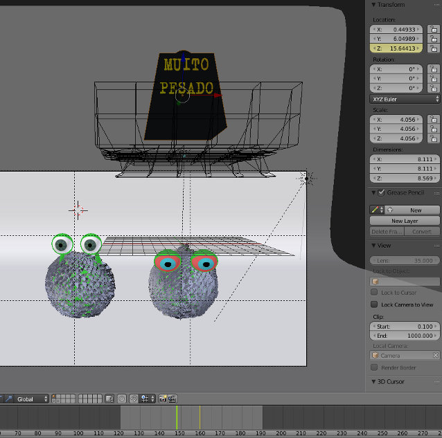 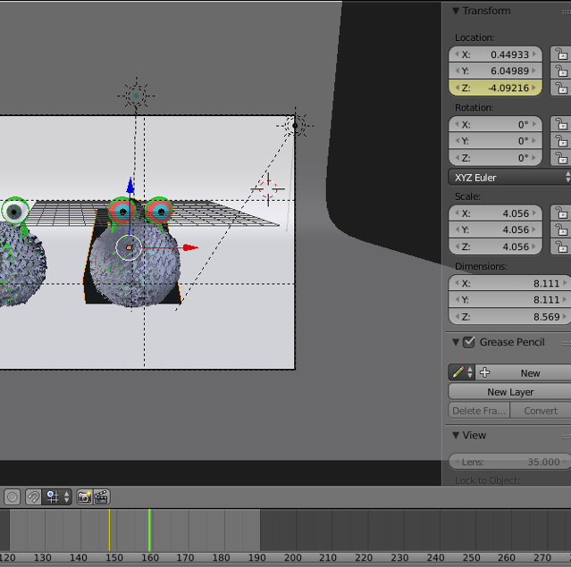No Graph Editor, por pré-definição, temos o peso animado com uma interpolação Bezier. Isto significa que o peso acelera no início e desacelera no final. Esta acelaração e desaceleração é bastante irrealista e nós pretendemos que no final o peso ressalte quando bater no chão.

Com as duas keyframes de Location em Z selecionadas, foi ativada a opção Bounce (Dynamic Effects) para criar um ressalto. Depois escolhemos Ease Out porque pretendemos que o ressalto surja no final, surja antes da última keyframe. Se necessário ou desejar, pode manipular as keyframes ou inserir novas keyframes para melhorar o efeito.
 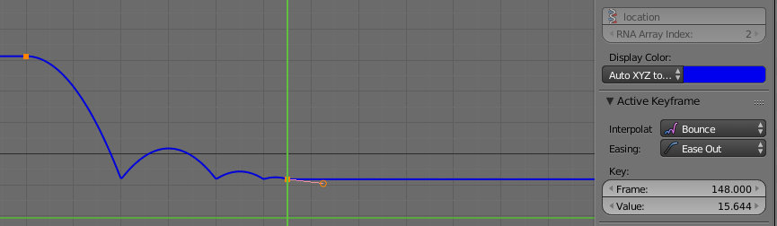
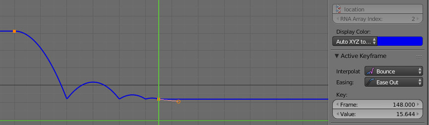
Consulte o texto Bola saltitona para obter mais informação sobre animação.
Lattices
1. Em primeiro lugar foi adicionada uma Lattice com várias subdivisões.
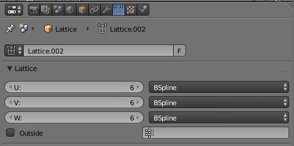2. Depois foi adicionado o modifier Lattice a todos os objetos que irão ser deformados (vários objetos do olhos).
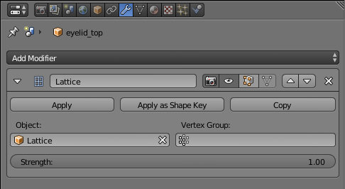3. Finalmente, foi manipulada a Lattice (em Edit Mode) para criar o efeito.
Importa referir que o corpo do "olhos azuis", o monstro esmagado, é animado com keyframes de Scale. Ou seja, foi inserida uma keyframe de Scale no corpo do monstro com olhos azuis durante cada frame da animação do peso. Deste modo, a animação de Scale do corpo do monstro está de acordo com o posicionamento do peso.
Depois de feita a animação do corpo, na última keyframe, foi manipulada a forma da Lattice para obtermos a posição final. Por fim, foi animada a Lattice (com keyframes de Location) para acompanhar o peso. Ou seja, foi inserida uma keyframe de Location na Lattice durante cada frame da animação do peso.
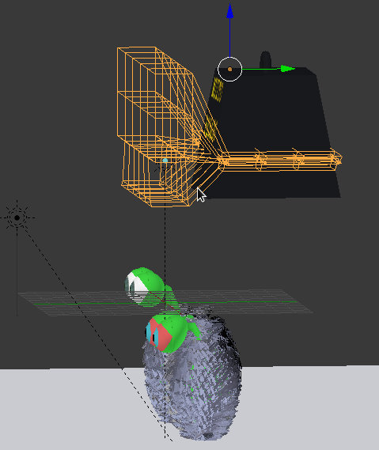 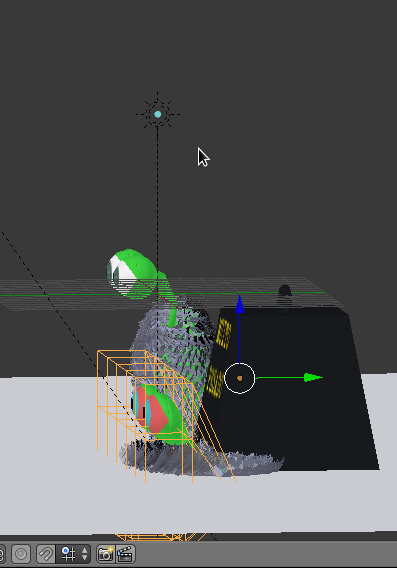Consulte o texto Modifiers para obter mais informação sobre Lattices.